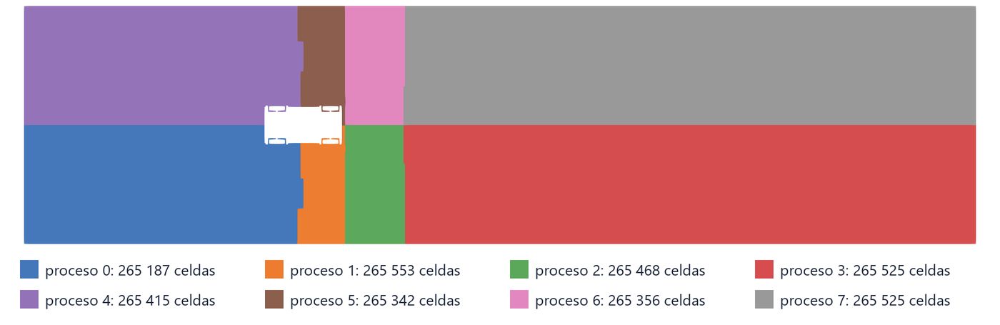
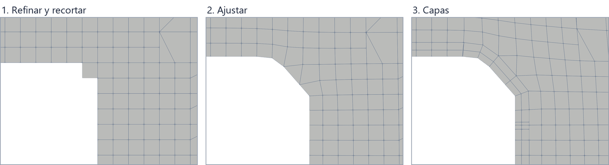
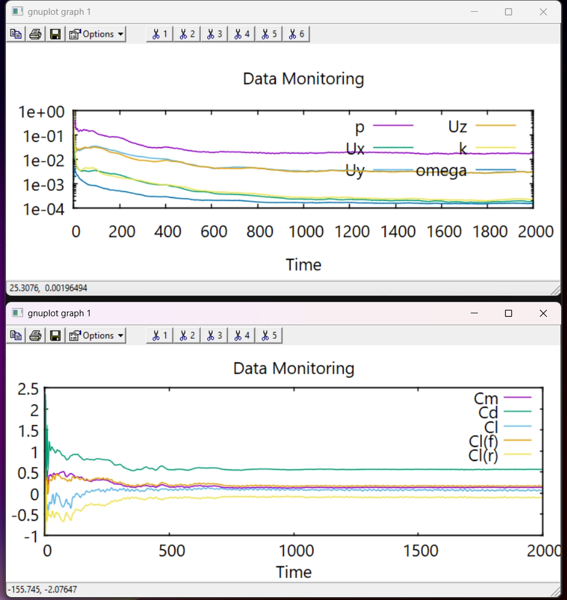
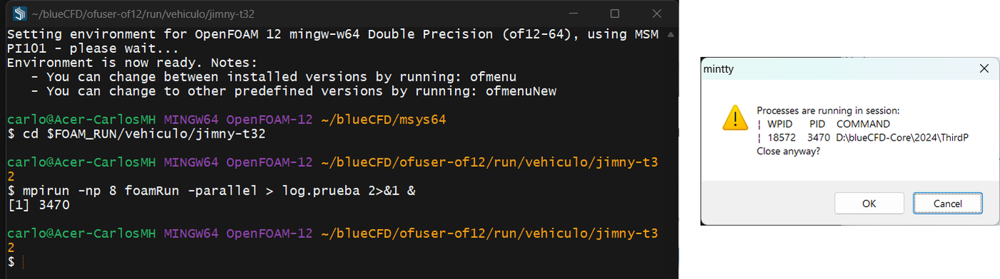

The case prepared in Tutorial 3.1, run on eight processes one command at a time: splitting the domain, the snappyHexMesh mesh and its three stages, the mesh check, the potential-flow start, the solver with MPI and how to watch it, and putting the pieces back together for ParaView.
OpenFOAM · Flujo incompresible · Tutorial 3.2
El Jimny en paralelo, paso a paso
El caso que se preparó en el tutorial 3.1, corrido en ocho procesos, un comando a la vez: el reparto del dominio, la malla de snappyHexMesh y sus tres etapas, la revisión de la malla, el arranque con flujo potencial, el solver con MPI y cómo vigilarlo, y la reconstrucción para ParaView.
OpenFOAM · Inkompressible Strömung · Tutorial 3.2
Der Jimny parallel, Schritt für Schritt
Der in Tutorial 3.1 vorbereitete Fall, auf acht Prozessen gerechnet, ein Befehl nach dem anderen: die Zerlegung des Gebiets, das Netz von snappyHexMesh und seine drei Schritte, die Netzprüfung, der Start mit Potentialströmung, der Löser mit MPI und seine Überwachung, und das Zusammenfügen für ParaView.
Estimated reading: 45 min (plus 2 h of computing)Lectura estimada: 45 min (y 2 h de cálculo)Lesedauer: ca. 45 min (dazu 2 h Rechenzeit)Level: undergraduateNivel: licenciaturaNiveau: BachelorVerified on OpenFOAM 12 (blueCFD-Core 2024) and ParaView 5.11.2Verificado en OpenFOAM 12 (blueCFD-Core 2024) y ParaView 5.11.2Geprüft mit OpenFOAM 12 (blueCFD-Core 2024) und ParaView 5.11.2
Full English translation in preparation. Each section below carries a summary of its content; the complete text, figures and tables are available in the Spanish version, which the ES button above selects.
Run a case in parallel by hand and know what each command does and what to check after it: domain decomposition, the three stages of snappyHexMesh, checkMesh, potentialFoam, foamRun with mpirun, monitoring and stopping a run, and reconstructPar. The results of the run are Tutorial 3.3.
The problem
Two million cells and two thousand iterations
A mesh of 2 123 371 cells and 2 000 iterations: 4 min of meshing and about 2 h of solver on eight cores of a laptop.
The theory
Splitting the domain, the mesh stages and convergence
Domain decomposition and MPI: each process owns a piece of the mesh and exchanges the values on the faces it shares; the hierarchical method; the three stages of snappyHexMesh with the cell count after each; what convergence means for a steady RANS run of a bluff body.
Step by step
Eight commands, in order
decomposePar -copyZero; mpirun -np 8 snappyHexMesh -parallel -overwrite; checkMesh and patchSummary in parallel; potentialFoam; foamRun in the background with its output in log.foamRun; foamMonitor for the residuals and the drag coefficient; reconstructPar -latestTime.
Worked example
What each step prints, and what to read in it
The output of every step from the reference run: the decomposition, the cell count after each mesh stage, the layer coverage, the one failed check of checkMesh (67 skewed boundary faces where the tyres meet the ground), the first iteration of the solver and the drag coefficient as the run goes.
Common errors
What goes wrong in parallel
A number of processes that does not match decomposeParDict; running the solver without mpirun (it takes the background mesh); closing the terminal while MS-MPI runs.
Suggested exercise
How much do eight processes gain?
Repeat the mesh and a hundred iterations with 4 and 2 processes and compute the speed-up.
Sources
References
The OpenFOAM user guide on running in parallel and on snappyHexMesh; the motorBikeSteady tutorial.
Objetivos de aprendizaje
Qué se debe poder hacer al terminar
El caso del Jimny quedó listo en el tutorial 3.1. Falta lo que más tarda: una malla de dos millones de celdas y dos mil iteraciones del solver. En una sola computadora eso se hace en paralelo, con todos sus núcleos a la vez. Esta guía lo corre a mano, un comando a la vez, para que se vea qué hace cada paso, qué escribe y qué hay que revisar antes de pasar al siguiente. ./Allrun hace lo mismo de un solo golpe.
Explicar qué es repartir el dominio (decomposePar), qué guarda cada carpeta processor* y qué junta reconstructPar.
Lanzar un programa de OpenFOAM en paralelo con mpirun y -parallel, y guardar su salida en un registro.
Reconocer las tres etapas de snappyHexMesh en su registro y leer el resumen de las capas.
Interpretar la salida de checkMesh, incluida una revisión que no pasa, y decidir si la malla sirve.
Correr el solver en segundo plano, vigilar los residuos y el Cd con foamMonitor, y detenerlo sin perder lo calculado.
Qué hace falta. El caso del 3.1 en $FOAM_RUN/jimny, con la malla de fondo ya hecha (pasos 8 y 9 de su receta), o el de jimny.zip con esos dos pasos corridos. Una computadora con 8 núcleos y al menos 16 GB de memoria: la malla llega a ocupar unos 14 GB. Con menos núcleos se cambia el número de procesos (sección «Errores frecuentes» y práctica sugerida).
El problema
Dos millones de celdas y dos mil iteraciones
El cálculo es el que se preparó en el 3.1: el Jimny completo a 100 km/h, con el suelo móvil y las ruedas girando, en un túnel virtual de 40 × 10 × 8 m. Lo que cambia ahora es la escala. La malla tiene 2 123 371 celdas y el solver da 2 000 iteraciones; en la laptop de referencia, con 8 procesos, la malla tarda 4 minutos y el solver 2.0 horas, a 3.6 s por iteración (tabla 1). En un solo proceso, varias veces eso.
Paso
Programa
Corre en
Tiempo
Escribe
1
decomposePar -copyZero
serie
1 s
processor0 … processor7, cada una con su pedazo de la malla de fondo y de 0/
2
snappyHexMesh -overwrite
8 procesos
3.9 min
la malla del vehículo, en processor*/constant/polyMesh
3
checkMesh, patchSummary
8 procesos
4 s
nada: sólo leen e informan
4
potentialFoam
8 procesos
4 s
el campo inicial (U, p, phi) en processor*/0
5–6
foamRun (y foamMonitor para vigilarlo)
8 procesos
2.0 h (3.6 s por iteración)
processor*/500, 1000, … y postProcessing/ en la raíz
7
reconstructPar -latestTime
serie
14 s
la malla completa en constant/polyMesh y la última iteración en 2000/
Tabla 1.Los pasos de la corrida, su tiempo y lo que dejan. Tiempos de la corrida de referencia en una laptop con 8 núcleos (OpenFOAM 12, blueCFD-Core 2024), de los registros de cada programa. «Raíz» es la carpeta del caso; processor*, las ocho carpetas que crea decomposePar.
Los números del cálculo —el Cd, el levante por eje, la y⁺— son el tema del tutorial 3.3. Aquí importa llegar a ellos sin errores, saber en cada momento qué está pasando, y reconocer cuándo el cálculo ya no va a cambiar.
La teoría
El reparto del dominio, las etapas de la malla y la convergencia
Repartir el dominio
OpenFOAM calcula en paralelo por descomposición del dominio: la malla se corta en tantos pedazos como procesos, y cada proceso resuelve las ecuaciones en su pedazo como si fuera un caso aparte. Donde dos pedazos se tocan, las caras compartidas se vuelven parches de tipo processor: en cada iteración, los dos procesos vecinos se pasan por ahí los valores de sus celdas de borde. Esa comunicación la hace MPI (en blueCFD-Core, MS-MPI de Microsoft), y el programa que arranca los procesos es mpirun.
Figura 1.Una corrida en paralelo.decomposePar corta la malla de fondo en ocho pedazos, uno por carpeta processor*, con n (4 2 1): cuatro a lo largo del túnel y dos a lo ancho. Cada programa que se lanza con mpirun -np 8 y -parallel arranca ocho procesos; cada uno lee y escribe sólo su carpeta y se comunica con sus vecinos por las caras que comparten. reconstructPar junta los pedazos en la carpeta del caso, la «raíz», para abrirla en ParaView.
Tres programas dividen el trabajo (figura 1):
decomposePar, en serie, corta la malla de la carpeta del caso —la «raíz»— y escribe un pedazo en cada carpeta processor0 … processor7. El método y el número de pedazos están en system/decomposeParDict: hierarchical con n (4 2 1) corta el túnel en cuatro a lo largo de x, en dos a lo ancho y en uno a lo alto.
Cada programa paralelo se lanza con mpirun -np 8 y la opción -parallel. Sin -parallel, mpirun arrancaría ocho copias del mismo programa en serie, todas sobre la raíz.
reconstructPar, en serie, junta los pedazos de nuevo en la raíz.
Lo que se reparte bien es el trabajo por celda; lo que no, la comunicación. Cada proceso hace \(1/N\) del trabajo, pero se detiene en cada iteración a intercambiar valores, y la cantidad que intercambia crece con las caras compartidas. Por eso ocho procesos no van ocho veces más rápido: la aceleración \(S_N = t_1/t_N\) queda por debajo de \(N\), y la eficiencia \(S_N/N\), por debajo del 100 %. Con unas 265 000 celdas por proceso, este caso está lejos del límite: una regla práctica habitual es no bajar de unas 10 000 a 50 000 celdas por proceso. La práctica sugerida mide cuánto se gana.
Repartir una malla que todavía no existe
Aquí hay una sutileza. decomposePar reparte la malla de fondo de blockMesh: 3 200 cubos, 400 por proceso, en ocho bloques iguales. Luego snappyHexMesh refina cada pedazo en su proceso, y el pedazo donde está el vehículo crecería mucho más que los de la salida del túnel. Para que no quede un proceso con casi todo el trabajo, snappyHexMeshrebalancea: mueve celdas de un proceso a otro mientras refina (el método está en la entrada distributor de decomposeParDict). Al final, cada proceso tiene casi el mismo número de celdas, y los pedazos ya no son bloques (figura 2).

Figura 2.El reparto real, al terminar la malla. El túnel completo visto desde arriba (el aire va de izquierda a derecha), cortado a 0.4 m del suelo, con cada celda del color de su proceso; el hueco blanco es el Jimny. Siguen los cuatro cortes a lo largo y los dos a lo ancho de n (4 2 1), pero ya no son bloques iguales: snappyHexMesh rebalancea la malla al refinar, y las franjas junto al vehículo, donde las celdas son chicas, quedaron angostas. Cada proceso tiene casi las mismas celdas (de 265 187 a 265 553). El color sale de constant/polyMesh/cellProc, que escribe reconstructPar. Render de ParaView sin ventana.
Las tres etapas de snappyHexMesh, en el registro
El tutorial 3.1 describió las tres etapas de snappyHexMesh. En el registro se ven una tras otra, cada una con el número de celdas al terminar y su tiempo (tabla 2): refinar y recortar (Mesh refined in), ajustar (Mesh snapped in) y agregar las capas (Layers added in). La figura 3 muestra la misma esquina después de cada una.
Etapa
Celdas al terminar
Tiempo
Qué cambió
malla de fondo (blockMesh)
3 200
—
3200 cubos de 1 m
1. refinar
2 113 862
57 s (con recortar)
cubos partidos en ocho, por aristas, superficie, distancia y cajas
recortar
1 905 878
207 984 celdas dentro del Jimny, fuera
2. ajustar
1 905 878
86 s
las mismas celdas; se mueven los vértices de la superficie
3. capas
2 123 371
91 s
217 493 celdas más: dos capas sobre 98.7 % de las caras de pared
Tabla 2.Las tres etapas de snappyHexMesh, en cifras. Del registro log.snappyHexMesh de la corrida de referencia. «Recortar» quita las celdas que quedaron dentro del vehículo; las capas agregan celdas, una por capa sobre cada cara de pared.

Figura 3.Las tres etapas de snappyHexMesh, en la esquina trasera del techo. Corte por y = 0 de la malla hecha sin -overwrite, que guarda cada etapa en una carpeta de tiempo. (1) Refinar y recortar: la superficie queda escalonada, hecha de caras de cubo. (2) Ajustar: los vértices de la superficie se mueven hasta el STL y la esquina queda recta. (3) Capas: dos capas delgadas pegadas a la pared. Render de ParaView sin ventana.
Con -overwrite, snappyHexMesh escribe sólo la malla final, en constant/polyMesh de cada processor*. Sin esa opción guarda cada etapa en una carpeta de tiempo (1, 2 y 3): sirve para ver qué hizo cada etapa, como en la figura, pero el solver empezaría por la malla de constant, que es la de fondo.
Cuándo está convergido un cálculo estacionario
El solver usa SIMPLE: cada iteración corrige la velocidad y la presión hacia una solución que no cambie de una iteración a la siguiente. El residuo inicial de cada ecuación mide cuánto falta: es el desequilibrio de la ecuación con los valores de la iteración anterior, normalizado. En un caso de libro, los residuos bajan sin parar hasta la tolerancia de system/fvSolution (aquí, \(10^{-4}\)) y el solver se detiene solo.
Un vehículo de caja no es un caso de libro. Detrás del Jimny el flujo se despega y forma una estela con remolinos que en la realidad nunca está quieta; un cálculo estacionario la representa con un flujo «casi» fijo que se mueve un poco de una iteración a otra. Los residuos bajan dos o tres órdenes y se estancan, y el solver corre todas las iteraciones de endTime. El criterio práctico es otro: el cálculo terminó cuando las cantidades que interesan dejan de cambiar. Aquí, el Cd: se considera asentado cuando su promedio sobre un tramo largo ya no cambia, y su oscilación es pequeña frente a la precisión que se busca.
Paso a paso
Ocho comandos, en orden
Todo en la terminal de blueCFD-Core, dentro del caso (cd $FOAM_RUN/jimny), con la malla de fondo ya hecha. Cada comando guarda su salida en un registro log.<programa>, igual que Allrun; | tee la muestra además en la terminal. La sección «Ejemplo resuelto» muestra y explica lo que escribe cada paso.
Repartir el dominio en ocho pedazos, con las condiciones de 0/:
decomposePar -copyZero | tee log.decomposePar
Aparecen las carpetas processor0 a processor7. -copyZero copia 0/ tal cual a cada una, en lugar de repartir los campos celda por celda: los campos todavía son uniformes, y además la malla va a cambiar.
La malla, con ocho procesos (unos 4 minutos):
mpirun -np 8 snappyHexMesh -parallel -overwrite | tee log.snappyHexMesh
Debe terminar con Finished meshing without any errors.
Revisar la malla y las condiciones de frontera que le tocan a cada parche:
mpirun -np 8 checkMesh -parallel | tee log.checkMesh
mpirun -np 8 patchSummary -parallel | tee log.patchSummary
El campo inicial, flujo potencial (unos segundos):
mpirun -np 8 potentialFoam -parallel | tee log.potentialFoam
El solver, en segundo plano, con su salida sólo en el registro (son decenas de miles de líneas):
El & final devuelve la terminal. tail -f muestra el registro mientras crece; Ctrl+C detiene tail, no el solver. Esta terminal no se cierra mientras el solver corre: cerrarla lo detiene (sección «Errores frecuentes»).
Vigilar los residuos y el Cd desde una segunda terminal de blueCFD-Core, en la misma carpeta:
cd $FOAM_RUN/jimny
foamMonitor -l "postProcessing/residuals(p,U,k,omega)/1/residuals.dat" &
foamMonitor postProcessing/forceCoeffs1/0/forceCoeffs.dat &
Cada comando abre una ventana de gnuplot que se actualiza sola cada 10 s y se cierra sola cuando el archivo pasa un minuto sin cambiar, es decir, al terminar el solver; para ver otra vez las curvas completas, se repite el comando. Las comillas de la primera ruta hacen falta por los paréntesis. Las gráficas se pueden cerrar en cualquier momento: el solver sigue.
Esperar, o detener antes. El solver termina solo en la iteración 2000 (unas 2 horas). Para detenerlo antes sin perder lo calculado:
El solver lee el cambio (runTimeModifiable true), termina la iteración en curso, la escribe y se detiene. Para seguir después desde ahí, stopAt endTime y startFrom latestTime.
Juntar y ver: la última iteración, en la raíz, y abrir el caso:
reconstructPar -latestTime | tee log.reconstructPar
paraFoam
El caso queda listo para el tutorial 3.3, que lee sus resultados. ./Allrun corre los mismos pasos (salvo vigilar y detener) con runParallel, que pone por su cuenta mpirun -np con el número de decomposeParDict y -parallel.
Ejemplo resuelto
Lo que escribe cada paso, y qué leer ahí
Las salidas son las de la corrida de referencia, que se hizo con la secuencia de Allrun; la de esta guía, escrita a mano, dio el mismo Cd, con todas sus cifras, en las 16 iteraciones que se corrieron.
1. El reparto
Processor 0
Number of cells = 400
Number of faces shared with processor 1 = 40
Number of faces shared with processor 4 = 80
Number of processor patches = 2
Number of processor faces = 120
Max number of cells = 400 (0% above average 400)
Max number of processor patches = 3 (20% above average 2.5)
Max number of faces between processors = 160 (14.2857% above average 140)
Ocho pedazos de 400 cubos, y 560 caras compartidas en total: los parches processor por los que se comunicarán los procesos. Como la malla de fondo es un bloque de cubos y n (4 2 1) divide exacto sus 40 × 10 × 8 celdas, el reparto es perfecto. En cada carpeta processor* hay ahora constant/polyMesh (su pedazo de la malla) y 0/.
2. La malla
Al final del registro, snappyHexMesh resume las capas región por región (tabla 3) y da el total:
Checking final mesh ...
Checking faces in error :
non-orthogonality > 65 degrees : 0
faces with concavity > 80 degrees : 0
faces with skewness > 4 (internal) or 20 (boundary) : 0
faces with interpolation weights (0..1) < 0.05 : 0
faces with volume ratio of neighbour cells < 0.01 : 0
faces with face twist < 0.02 : 0
faces on cells with determinant < 0.001 : 0
Finished meshing without any errors
Finished meshing in = 235.286 s.
Región
Caras
Capas
Espesor [mm]
Espesor [% del pedido]
carroceria
85 193
1.90
12.5
87.7
bajos
10 188
1.68
8.6
61.1
ruedasDelanteras
8 094
1.99
13.5
94.1
ruedasTraseras
8 089
2.00
13.7
95.3
refaccion
2 683
1.88
12.8
89.4
espejos
910
1.67
9.2
64.5
Tabla 3.Las capas, región por región. La tabla con que termina log.snappyHexMesh. «Capas» es el promedio sobre las caras de la región (se pidieron 2); «espesor» es el espesor total de las capas, en metros y en porcentaje del que se pidió.
2 123 371 celdas. Las capas cubren casi toda la carrocería y las ruedas (1.9 a 2 capas de las 2 pedidas, con el 88–95 % del espesor), y menos los bajos y los espejos (alrededor de 1.7 capas y el 61–65 % del espesor): son las regiones con más rincones, donde snappyHexMesh retira las capas que estropearían la calidad. En total extruyó 113 666 de 115 157 caras de pared, el 98.7 %. La revisión final no encuentra ninguna cara fuera de los límites de system/meshQualityDict.
3. La revisión de la malla
Mesh stats
points: 2349637
faces: 6591880
internal faces: 6341876
cells: 2123371
faces per cell: 6.09114
boundary patches: 14
point zones: 0
face zones: 0
cell zones: 0
Checking geometry...
Overall domain bounding box (-10 -5 0) (30 5 8)
Mesh has 3 geometric (non-empty/wedge) directions (1 1 1)
Mesh has 3 solution (non-empty) directions (1 1 1)
Max cell openness = 5.224e-16 OK.
Max aspect ratio = 35.2145 OK.
Minimum face area = 8.57576e-07. Maximum face area = 1.00002. Face area magnitudes OK.
Min volume = 4.55942e-08. Max volume = 1.00002. Total volume = 3193.85. Cell volumes OK.
Mesh non-orthogonality Max: 63.5182 average: 6.33176
Non-orthogonality check OK.
Face pyramids OK.
***Max skewness = 6.51367, 67 highly skew faces detected which may impair the quality of the results
Coupled point location match (average 0) OK.
Failed 1 mesh checks.
La malla tiene las 2 123 371 celdas de snappyHexMesh, 2 035 692 de ellas cubos (el 96 %), y una no ortogonalidad máxima de 63.5° con promedio de 6.3°: buena para el solver. Y una revisión que no pasa, marcada con ***: 67 caras con sesgo mayor que 4, con un máximo de 6.51.
¿Dónde están? snappyHexMesh acaba de decir que ninguna cara pasa de sus límites, y los suyos, en meshQualityDict, son maxInternalSkewness 4 y maxBoundarySkewness 20. checkMesh usa 4 para todas las caras. Las dos salidas sólo concuerdan si las 67 caras son caras de frontera con sesgo entre 4 y 20: caras de pared. Y como aparecieron al hacer redondas las llantas (en el 3.1), son las de la cuña entre cada llanta y el suelo (figura 3 del 3.1). Son 67 de 6.6 millones de caras, en el rincón más difícil del caso, y el solver corre sin problemas. La malla sirve; la práctica es anotarlo, no ignorarlo.
patchSummary confirma qué condición le toca a cada parche; agrupa los que tienen las mismas:
wall : carroceria
wall : bajos
wall : refaccion
wall : espejos
scalar nut nutkWallFunction
scalar k kqRWallFunction
scalar p zeroGradient
scalar omega omegaWallFunction
vector U noSlip
wall : ruedasDelanteras
wall : ruedasTraseras
scalar nut nutkWallFunction
scalar k kqRWallFunction
scalar p zeroGradient
scalar omega omegaWallFunction
group : processor
scalar nut processor
scalar k processor
scalar p processor
scalar omega processor
vector U processor
Las cuatro regiones fijas llevan noSlip y las ruedas, rotatingWallVelocity, como se pidió en 0/U.orig. El último grupo, processor, son las caras compartidas entre procesos: no son fronteras del túnel ni del vehículo, y su «condición» es el intercambio de valores.
4. El campo inicial
Calculating potential flow
GAMG: Solving for Phi, Initial residual = 1, Final residual = 0.0923664, No Iterations 7
GAMG: Solving for Phi, Initial residual = 0.0254875, Final residual = 0.00116505, No Iterations 1
GAMG: Solving for Phi, Initial residual = 0.00135258, Final residual = 0.000111831, No Iterations 4
GAMG: Solving for Phi, Initial residual = 0.00061986, Final residual = 4.34707e-05, No Iterations 2
GAMG: Solving for Phi, Initial residual = 7.71021e-05, Final residual = 6.62924e-06, No Iterations 4
GAMG: Solving for Phi, Initial residual = 2.44429e-05, Final residual = 1.77759e-06, No Iterations 3
GAMG: Solving for Phi, Initial residual = 4.56797e-06, Final residual = 8.01522e-07, No Iterations 2
GAMG: Solving for Phi, Initial residual = 1.40029e-06, Final residual = 3.78003e-07, No Iterations 1
GAMG: Solving for Phi, Initial residual = 4.45302e-07, Final residual = 4.45302e-07, No Iterations 0
GAMG: Solving for Phi, Initial residual = 4.45302e-07, Final residual = 4.45302e-07, No Iterations 0
GAMG: Solving for Phi, Initial residual = 4.45302e-07, Final residual = 4.45302e-07, No Iterations 0
Continuity error = 8.22993e-05
Interpolated velocity error = 0.000267329
potentialFoam resuelve el flujo potencial —sin viscosidad, sin estela— y lo escribe como campo inicial en processor*/0. Tarda 4.4 s. Arrancar de él, y no de un campo uniforme que atraviesa el vehículo, evita que las primeras iteraciones del solver vayan muy lejos. Un detalle: el Cd del flujo potencial es 0.0041 (primera fila de forceCoeffs.dat, el tiempo 0). Es la paradoja de d'Alembert: sin viscosidad no hay arrastre. Todo el arrastre del Jimny lo pone el solver, con la capa límite y la estela.
5. El solver
Una iteración del registro log.foamRun, la primera:
Time = 1s
smoothSolver: Solving for Ux, Initial residual = 0.0741398, Final residual = 0.00441761, No Iterations 2
smoothSolver: Solving for Uy, Initial residual = 0.177184, Final residual = 0.00857436, No Iterations 2
smoothSolver: Solving for Uz, Initial residual = 0.165917, Final residual = 0.00728544, No Iterations 2
GAMG: Solving for p, Initial residual = 1, Final residual = 0.0697652, No Iterations 3
time step continuity errors : sum local = 0.00669643, global = -3.15432e-06, cumulative = -3.15432e-06
smoothSolver: Solving for omega, Initial residual = 0.00146172, Final residual = 3.92095e-05, No Iterations 2
smoothSolver: Solving for k, Initial residual = 1, Final residual = 0.050699, No Iterations 2
bounding k, min: -0.000206278 max: 0.0479107 average: 0.00502951
ExecutionTime = 8.499 s ClockTime = 9 s
forceCoeffs forceCoeffs1 write:
Cm = 0.404204
Cd = 1.25326
Cl = -0.180748
Cl(f) = 0.31383
Cl(r) = -0.494578
Cada iteración resuelve las tres componentes de la velocidad, la presión, ω y k, en ese orden; cada renglón da el residuo inicial, el final y las iteraciones del solver lineal. ExecutionTime es el tiempo acumulado; restando el de dos iteraciones seguidas sale el costo de cada una, 3.6 s en promedio. Al final de cada iteración, forceCoeffs escribe los coeficientes. Al principio están lejos del valor final (Cd de 1.25 en la primera): el flujo apenas se está formando.
Mientras el solver corre, foamMonitor dibuja los residuos y los coeficientes; la figura 4 es lo que muestra al final de las 2000 iteraciones. Las figuras 5 y 6 son las mismas curvas, dibujadas con los archivos de postProcessing para leerlas mejor.

Figura 4.Lo que muestra foamMonitor. Las dos ventanas de gnuplot al terminar el solver, a la derecha de la pantalla. Arriba, los residuos iniciales de p, de las tres componentes de U, de k y de ω, en escala logarítmica. Abajo, las cinco columnas de forceCoeffs.dat: foamMonitor dibuja todas, y el Cd es la curva verde que se asienta cerca de 0.56. Captura de la corrida del vídeo de esta guía, que terminó con el mismo Cd que la de referencia.Figura 5.Los residuos de la misma corrida. De postProcessing/residuals(p,U,k,omega)/1/residuals.dat. Bajan dos o tres órdenes y se estancan: el de p queda en 1.7·10−2 y nunca llega a la tolerancia (línea discontinua), así que el solver no se detiene solo y corre las 2000 iteraciones. Con un cuerpo romo y una estela despegada, es lo normal.Figura 6.El Cd mientras corre el solver. Las 2000 iteraciones de la corrida de referencia, de postProcessing/forceCoeffs1/0/forceCoeffs.dat: lo mismo que dibuja foamMonitor en marcha. Tras un arranque brusco, el Cd se asienta hacia la iteración 800; de la 1001 a la 2000 promedia 0.564 con una desviación estándar de 0.003.
Los residuos se estancan pronto, como se esperaba (sección «Teoría»), y el de p nunca llega a la tolerancia. El Cd da la respuesta: tras un arranque brusco se asienta hacia la iteración 800 (desde ahí, el promedio de cada tramo de 100 iteraciones queda entre 0.561 y 0.569), y de la 1001 a la 2000 promedia 0.564 con una desviación estándar de 0.003, el 0.5 %. Ese cálculo está terminado, aunque los residuos no lo digan. Cuánto vale ese Cd y qué tan confiable es, es el tutorial 3.3.
6. Detener y juntar
En la exploración de esta guía el solver se detuvo con writeNow en la iteración 16: terminó normalmente (End) y escribió processor*/16. reconstructPar -latestTime tardó 14 s:
Reconstructing meshes
Merging mesh 0 with 1
Merging mesh 2 with 3
Merging mesh 4 with 5
Merging mesh 6 with 7
Merging mesh 0 with 2
Merging mesh 4 with 6
Merging mesh 0 with 4
Primero junta las mallas de los ocho procesos, de dos en dos, y escribe la malla completa en constant/polyMesh de la raíz: reemplaza la malla de fondo, que ya no hace falta. Luego junta los campos de la última iteración en 2000/. En constant/polyMesh deja además cellProc, el proceso de cada celda, con el que se dibujó la figura 2. Con eso, paraFoam abre el caso como cualquier caso en serie.
El cálculo está hecho. Una malla de 2 123 371 celdas en 4 minutos, con 67 caras sesgadas localizadas y entendidas; 2 000 iteraciones en 2.0 horas, con el Cd asentado en 0.564 ± 0.003; y el resultado en la raíz del caso. Las carpetas processor* guardan todas las escrituras (500, 1000, 1500 y 2000) y ocupan más que la raíz: cuando ya no se necesiten, se pueden borrar.
Errores frecuentes
Qué sale mal en paralelo
Los mensajes son reales: se provocaron a propósito en copias del caso.
1. Un número de procesos distinto del de decomposeParDict
Con mpirun -np 6 en un caso repartido en ocho:
[0] --> FOAM FATAL ERROR:
[0] "D:/blueCFD-Core/2024/ofuser-of12/run/vehiculo/jimny-t32-etapas/system/decomposeParDict" specifies 8 processors but job was started with 6 processors.
[0]
FOAM parallel run exiting
OpenFOAM se niega a correr. Remedio: el -np de mpirun debe ser el numberOfSubdomains de decomposeParDict. Para usar otro número, se cambian numberOfSubdomains y n (cuyo producto debe dar ese número) y se reparte de nuevo: decomposePar -force borra las carpetas processor* anteriores.
2. El solver sin mpirun
Si se escribe sólo foamRun, en serie, el solver no lee las carpetas processor*: lee la raíz, donde sigue la malla de fondo de 3 200 cubos, sin el vehículo. Y no se detiene. Avisa una vez, al empezar, que no encuentra el grupo de las fuerzas:
Cannot find any patch or group names matching jimnyGroup
y corre, con un Cd de cero y cada iteración en una fracción de segundo:
Time = 3s
smoothSolver: Solving for Ux, Initial residual = 0.00955492, Final residual = 0.00513222, No Iterations 1000
smoothSolver: Solving for Uy, Initial residual = 0.282453, Final residual = 5.02743e-05, No Iterations 1
smoothSolver: Solving for Uz, Initial residual = 0.265954, Final residual = 4.75075e-05, No Iterations 1
GAMG: Solving for p, Initial residual = 0.297893, Final residual = 0.0142902, No Iterations 1
time step continuity errors : sum local = 1.68151e-15, global = 2.54071e-17, cumulative = 2.85312e-17
smoothSolver: Solving for omega, Initial residual = 0.0188206, Final residual = 0.00116048, No Iterations 1
smoothSolver: Solving for k, Initial residual = 0.469615, Final residual = 0.0254124, No Iterations 1
ExecutionTime = 0.361 s ClockTime = 0 s
forceCoeffs forceCoeffs1 write:
Las dos señales —el Cd nulo y una iteración decenas de veces más rápida que con el vehículo— dicen que se está calculando el túnel vacío. Remedio: todo lo que va después de decomposePar y antes de reconstructPar lleva mpirun -np 8 y -parallel.
3. Cerrar la terminal con el solver corriendo
El solver corre en segundo plano, pero sus ocho procesos son hijos de la terminal desde la que se lanzó mpirun. Al cerrar esa ventana, mintty avisa (figura 7):

Figura 7.Cerrar la terminal del solver. Izquierda: la terminal donde se lanzó mpirun -np 8 foamRun -parallel > log.prueba 2>&1 &; [1] 3470 es el número del trabajo en segundo plano. Derecha: lo que pregunta mintty al cerrar la ventana con su ×: hay procesos corriendo, ¿cerrar de todos modos? Captura de la prueba hecha para esta guía.
El botón por omisión es Cancel, y es el correcto. Con OK, en la prueba que se hizo para esta guía, los ocho procesos de foamRun desaparecieron al instante y el registro quedó cortado a media iteración, sin un solo mensaje de error:
Time = 42s
smoothSolver: Solving for Ux, Initial residual = 0.00339564, Final residual = 0.000239497, No Iterations 2
smoothSolver: Solving for Uy, Initial residual = 0.027154, Final residual = 0.00188304, No Iterations 2
smoothSolver: Solving for Uz, Initial residual = 0.0291933, Final residual = 0.0020588, No Iterations 2
GAMG: Solving for p, Initial residual = 0.160887, Final residual = 0.00951584, No Iterations 2
time step continuity errors : sum local = 0.0026403, global = -9.37456e-05, cumulative = -0.000583206
Lo mismo pasa si se cierra la sesión desde la que se lanzó: en una corrida de este bloque, lanzada desde otro programa, MS-MPI se cortó en la iteración 822 con Aborting: mpiexec on ACER-CARLOSMH failed to communicate with smpd manager. En los dos casos se pierde lo calculado desde la última escritura (con writeInterval 500, hasta 499 iteraciones). Remedio: dejar abierta la terminal del solver y vigilarlo desde otra. Si se cortó, se sigue desde la última escritura con startFrom latestTime en system/controlDict y el mismo mpirun. Mientras la computadora calcula, conviene que no entre en suspensión.
Práctica sugerida
¿Cuánto ganan ocho procesos?
Medir cuánto ganan los procesos: la misma malla y cien iteraciones con 2 y 4 procesos.
Enunciado. Repetir los pasos 1 a 5 de la receta con 4 y con 2 procesos, deteniendo el solver tras cien iteraciones, y comparar los tiempos con los de 8 (tabla 4).
Condiciones. El mismo caso y la misma computadora, sin otros programas pesados abiertos. La malla con un solo proceso tardaría mucho y puede no caber en la memoria; la columna de un proceso se deja para quien tenga tiempo.
El procedimiento, en corto
Copiar el caso (cp -r $FOAM_RUN/jimny $FOAM_RUN/jimny4), entrar y borrar lo calculado: rm -rf processor* 2000 constant/polyMesh postProcessing log.*, y blockMesh para rehacer la malla de fondo (reconstructPar la había reemplazado).
En system/decomposeParDict: numberOfSubdomains 4 y n (2 2 1). En system/controlDict: endTime 100.
Correr los pasos 1 a 5 con -np 4. El tiempo de la malla está al final de log.snappyHexMesh (Finished meshing in); el de cada iteración, restando dos ExecutionTime seguidos de log.foamRun (o con foamLog log.foamRun, que escribe logs/executionTime_0).
Repetir con 2 procesos y n (2 1 1).
Registro de resultados
Procesos N
n en decomposeParDict
snappyHexMesh [s]
Tiempo por iteración [s]
Aceleración
Eficiencia
1
—
1
100 %
2
(2 1 1)
4
(2 2 1)
8
(4 2 1)
235
3.63
Tabla 4.Registro de la práctica. El renglón de 8 procesos es el de la corrida de referencia de esta guía (la malla) y el promedio de sus 2000 iteraciones; los demás se llenan con la corrida propia. La aceleración es el tiempo con un proceso entre el tiempo con N; la eficiencia, la aceleración entre N.
Preguntas que orientan la lectura
¿Crece la aceleración en proporción al número de procesos? ¿Qué parte del tiempo no se reparte?
¿Cuántos núcleos físicos tiene la computadora? ¿Qué pasa si se piden más procesos que núcleos?
¿Cambia el número de celdas de la malla con el número de procesos? ¿Y el Cd de la iteración 100? Si cambia, ¿por qué podría hacerlo?
Fuentes
Referencias
OpenFOAM Foundation. (2024). OpenFOAM user guide, version 12, secciones «Running applications in parallel» y «Mesh generation with the snappyHexMesh utility». https://doc.cfd.direct/openfoam/user-guide-v12/
OpenFOAM Foundation. (2024). Tutorial incompressibleFluid/motorBikeSteady, OpenFOAM 12 (su Allrun, en $FOAM_TUTORIALS de blueCFD-Core 2024).
Ferziger, J. H., Perić, M. y Street, R. L. (2020). Computational methods for fluid dynamics (4.ª ed.). Springer.
Las salidas de los programas son de la corrida de referencia en blueCFD-Core 2024 (OpenFOAM 12), en una laptop con Windows 11, 8 núcleos y 16 GB; los errores, de copias del caso en la misma computadora. Las imágenes de la malla son renders de ParaView 5.11.2 sin ventana; las gráficas, de los archivos de postProcessing de la misma corrida.
Lernziele
Was Sie danach können sollten
Vollständige deutsche Übersetzung in Vorbereitung. Jeder Abschnitt enthält eine Zusammenfassung; der vollständige Text mit Abbildungen und Tabellen liegt in der spanischen Fassung vor, die über die Schaltfläche ES oben erreichbar ist.
Einen Fall von Hand parallel rechnen und wissen, was jeder Befehl tut und was danach zu prüfen ist: Gebietszerlegung, die drei Schritte von snappyHexMesh, checkMesh, potentialFoam, foamRun mit mpirun, Überwachen und Anhalten einer Rechnung, reconstructPar. Die Ergebnisse folgen in Tutorial 3.3.
Das Problem
Zwei Millionen Zellen und zweitausend Iterationen
Ein Netz mit 2 123 371 Zellen und 2 000 Iterationen: 4 min Vernetzung und etwa 2 h Löser auf acht Kernen eines Laptops.
Die Theorie
Gebietszerlegung, Netzschritte und Konvergenz
Gebietszerlegung und MPI: jeder Prozess besitzt ein Stück des Netzes und tauscht die Werte auf den gemeinsamen Flächen aus; die hierarchische Methode; die drei Schritte von snappyHexMesh mit der Zellenzahl danach; was Konvergenz bei einer stationären RANS-Rechnung eines stumpfen Körpers bedeutet.
Schritt für Schritt
Acht Befehle, der Reihe nach
decomposePar -copyZero; mpirun -np 8 snappyHexMesh -parallel -overwrite; checkMesh und patchSummary parallel; potentialFoam; foamRun im Hintergrund mit der Ausgabe in log.foamRun; foamMonitor für Residuen und Widerstandsbeiwert; reconstructPar -latestTime.
Durchgerechnetes Beispiel
Was jeder Schritt ausgibt und was man darin liest
Die Ausgabe jedes Schritts aus der Referenzrechnung: die Zerlegung, die Zellenzahl nach jedem Netzschritt, die Schichtabdeckung, die eine fehlgeschlagene Prüfung von checkMesh (67 schiefe Randflächen, wo die Reifen den Boden berühren), die erste Iteration des Lösers und der Widerstandsbeiwert im Verlauf.
Häufige Fehler
Was parallel schiefgeht
Eine Prozesszahl, die nicht zu decomposeParDict passt; den Löser ohne mpirun starten (er nimmt das Hintergrundnetz); das Terminal schließen, während MS-MPI läuft.
Übungsvorschlag
Wie viel bringen acht Prozesse?
Netz und hundert Iterationen mit 4 und 2 Prozessen wiederholen und die Beschleunigung berechnen.
Quellen
Literatur
Das OpenFOAM-Benutzerhandbuch zum Parallelrechnen und zu snappyHexMesh; das Tutorial motorBikeSteady.